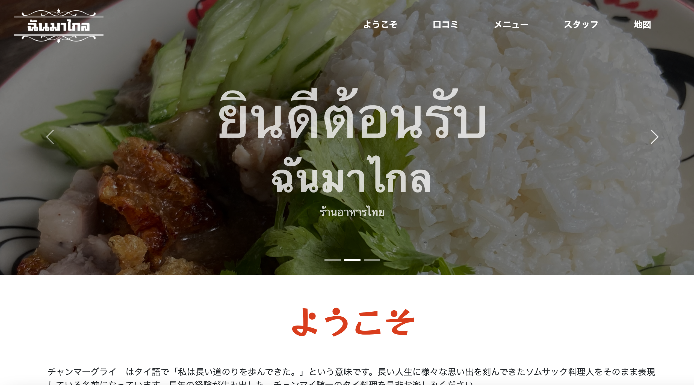
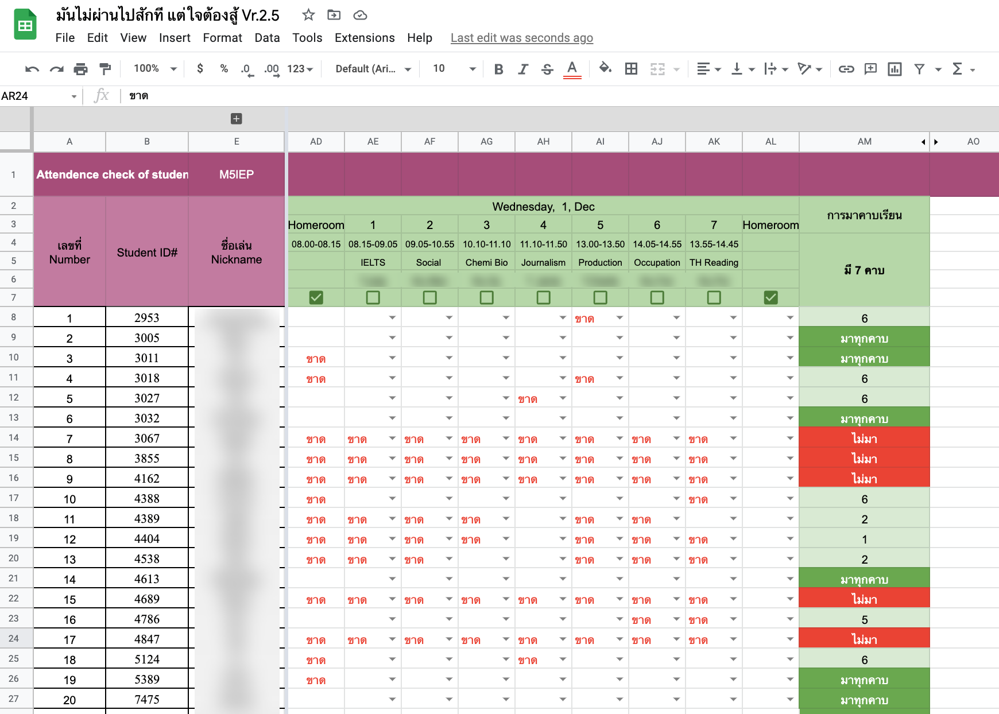

About me
| 習得内容 | 説明 |
|---|---|
| Phtoshop/Illustrater | 中学二年生の頃に勉強したコンピュターの授業をきっかけに関心を持ち、Youtubeなどのチュートリアルで、オブジェクトの色変更、画像の切り抜き等基本的な機能を独学で習得。自身の弟のゲーム実況動画のサムネイルを作成。 |
| Adobe XD | 父が作成するIOSアプリケーションのデザインを担当。とある自己啓発アプリのデザイン案も作成したが採用には至らず。 |
| Google Sheet | 高校のクラスの業務効率化のために友人とGoogle Sheetを用いた出席記録を作成。欠席回数と欠席者数、出席率を計算して表示するように設計。 |
| html & css | 父のすすめで基本的なhtmlとcssおよび、cssフレームワークの知識を習得。知り合いの地元タイ料理店のウェブサイトを作成。このポートフォリオもUIkitと呼ばれるフレームワークを用いて作成。 |
| タイ語・英語 | 家族でタイに移住したため、必要に迫られてタイ語を習得、また学校のグローバルな教育方針のおかげで英語も習得。 |
Works
Rabbit in Rubbish
Photoshopでゴミと、地球、うさぎの写真を加工して作りました。
Youtubeサムネイル
弟が動画を投稿しているStarblast.io というゲームでのサムネイルをフォトショップで作成しました。

チャン・マー・グライ
Bootstrapフレームワークを使用してシンプルなウェブサイトを作成しました。
Media Bottom
母と共同で出していた、メールマガジンのトップ画像を数十枚作成しました。すべてのトップ画像にマガジンのロゴがはいっています。


Student Attendance tracker
コロナ渦でオンライン授業の際、出席・欠席を日毎に一覧し、わかりやすくデータにまとめる表を作成しました。
タイ文学の翻訳
学校の授業で学習した知られざるタイの文学の要約を翻訳、メルマガにて配信していました。
Tools
Item 1
Item 2
Item 3